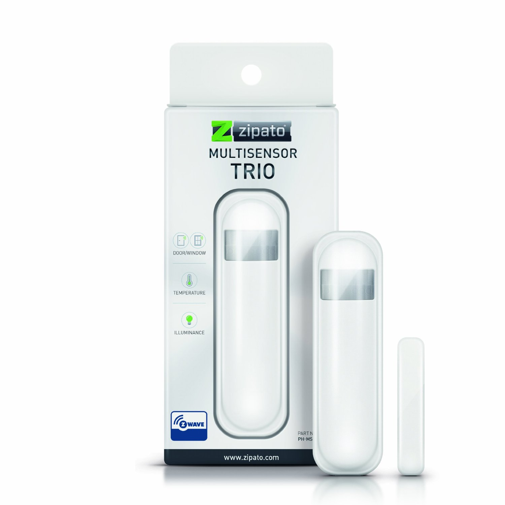

Zipato Z-Wave multi sensor Trio, White¶

Brief information¶
- Reliable detection of open/closed status as well and metering functions
- Measures light levels and room temperature
- Can trigger a security system alarm
- Built-in tamper protection
- Battery Operated, has low battery alerts
How to add to VENUS app¶
- 1. Activation
- Press “Add button” (button ‘+’) in app
- Remove thin pull tab plastic
- Wait for VENUS scan & detect this device and inform in app
- 2. Reset then re-add
- Press “Add button” (button ‘+’) in app
- Pressing tamper key three times within 1.5 seconds
- Wait for VENUS scan & detect this device and inform in app

How to add/remove associated device(s) to¶
This device supports 2 associated groups, 1 for report message and 1 for controlling associated devices. And supports maximum 8 devices each group.
To add associated device(s) to this sensor, below action is required:
- Add z-wave notified-devices (which will be associated to this sensor) to VENUS
- Select Associate button and then select notified-device(s) to add
- Pressing tamper key three times within 1.5 seconds
- If successful, pop-up notification displays in VENUS app
To remove associated device(s) from this sensor, below action is required:
- Select Associate button and then select notified-device(s) to remove
- Pressing tamper key three times within 1.5 seconds
- If successful, pop-up notification displays in VENUS app
Configuration description¶
Trigger value to associated devices
Available 0: OFF (Turn off devices) 1 ~ 99: ON (Binary switch devices)
Dim value (Multi-level devices)255: ON
Default 255
- Light threshold setting
Setting the illumination threshold to turn on the light..
Available 0: Turn off illumination detected function (DEBUG mode only) 1 ~ 99: illumination detected level (1: darkest, 99: brightest) 100: Turn off illumination detected function and always turn on the associated devices (DEBUG mode only) Default 99
- Operation mode
This setting uses bit control
Bit 1 0: Normal mode 1: Test mode Bit 2 0: Enable door/window sensor 1: Disable Bit 3 0: Fahrenheit temperature type 1: Celcius temperature type Bit 4 0: Enable illumination 1: Disable Bit 5 0: Enable temperature detect function 1: Disable Bit 7 0: Enable the back key release into test mode 1: Disable Default 0x00
- Motion detected time-out
Interval time to send trigger OFF from the last motion
Available 0: never send trigger OFF to associated devices 1 ~ 127 (in ticks, 1 tick = 8 seconds) Default 4 (32 seconds)
- Auto report tick time interval
Setting period of time for each tick. This tick is used for below configuration settings
Available 0: Turn OFF all auto report functions 1 ~ 255 (in seconds) Default 30
- Battery auto report time
A period of time that device sends battery information to controller
Available 0: Turn OFF this function 1 ~ 127 (in ticks) Default 12
- Door/window state auto report time
A period of time that device sends door/window state to controller
Available 0: Turn OFF this function 1 ~ 127 (in ticks) Default 12
- Illumination auto report time
A period of time that device sends illumination detected information to controller
Available 0: Turn OFF this function 1 ~ 127 (in ticks) Default 12
- Temperature auto report time
A period of time that device sends temperature information to controller
Available 0: Turn OFF this function 1 ~ 127 (in ticks) Default 12
Factory reset¶
- Pressing tamper key four times within 1.5 seconds and during 4th press, hold the tamper key until LED lights up.
- After 3 seconds the LED will turn OFF, and after next 2 seconds, release the tamper key. If successful, the LED will light ON for second. Otherwise, the LED will flash once.
- IDs are excluded and all settings will reset to factory default.